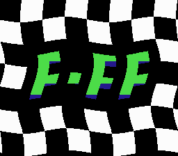
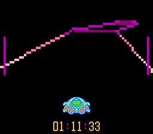

F-FF
A fast, 3D racer for the NES.
 
Play Online
Download
A de-make of F-Zero.
D-Pad steers.
Hold B to accelerate..
Press A to use boost power. Boost power drains life.
Press Select on the level select screen for 2 player mode.
[Back to my homepage]